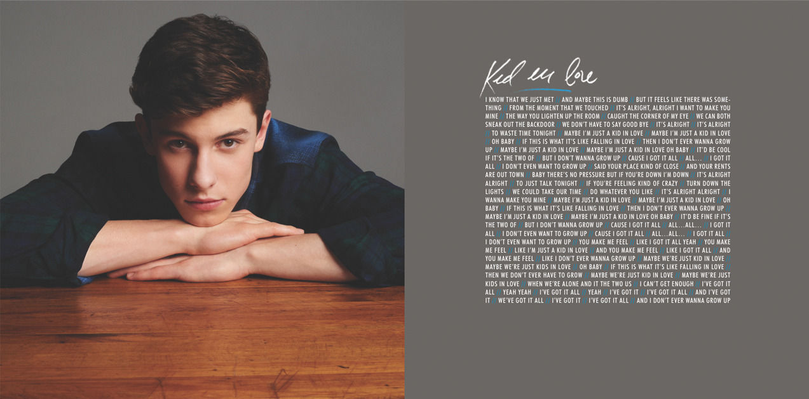

2013年，肖恩·蒙德兹在网上发布翻唱视频而被网友认识。2014年1月，肖恩·蒙德兹被经纪人Andrew Gertler发掘，并签约小岛唱片。6月26日，因发行个人首支单曲《Life Of The Party》而正式出道；该歌曲在发行首周便获得美国公告牌百强单曲榜单第二十四位
2015年4月14日，肖恩·蒙德兹发行个人首张专辑《Handwritten》，该张专辑在美国的首周销量达到106000张，并获得美国Billboard 200专辑榜冠军 。10月26日，肖恩·蒙德兹获得欧洲MTV音乐录影带最佳新人、最具突破艺人两项奖 。
2016年09月23日，肖恩·蒙德兹发行个人第二张专辑《Illuminate》，收录了主打歌曲《Treat You Better》、摇滚歌曲《Mercy》等在内的12首歌曲，专辑主题趋向成熟化；该张专辑在发行首周便获得美国公告牌专辑榜冠军 。11月7日，肖恩·蒙德兹凭借专辑《Handwritten》获得欧洲MTV音乐录影带最佳男歌手奖 。12月10日，蒙德兹担任由艾玛·斯通（Emma Stone）主持的深夜时段直播的喜剧小品类综艺节目《周六夜现场》的音乐嘉宾 。
2017年，获得MTV欧洲音乐奖的最佳艺人奖、最具人气奖，其作品《There's Nothing Holdin' Me Back》获得最佳单曲奖 。
2018年5月25日，推出第三张专辑《Shawn Mendes》 。
2019年8月，获得2019MTV音乐录影带奖最佳合作 。
2019年9月25日，肖恩·蒙德兹亚洲巡回第一站在韩国首尔的奥林匹克体操竞技场开唱。
2020年3月11日，IFPI公布2019年十大最畅销单曲，凭借《Señorita》1610万的销量获得第三名。